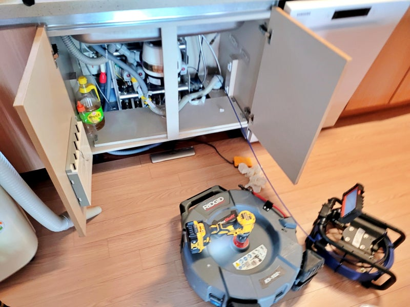
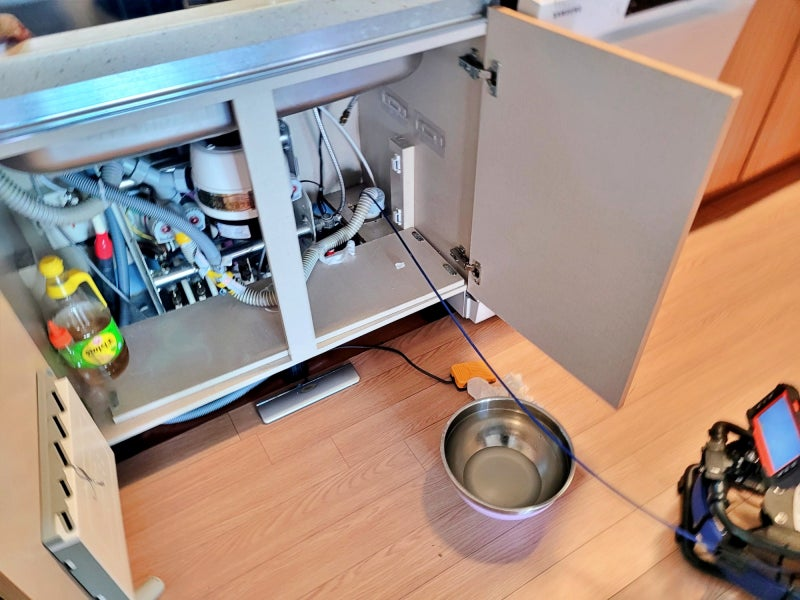

용인 수지구 풍덕천동 음식물처리기
배관막힘, 싱크대 하수관 청소작업

환영합니다.
용인 수지구 풍덕천동 배관막힘
청소전문업체 하수구수사대입니다.
오늘 시공 후기는
용인 수지구 풍덕천동에 위치한
한 아파트에서 싱크대 물이 전혀
빠지지 않고 수조에 그대로 고인다는
다급한 연락을 받고 출동한 사례입니다.

용인 풍덕천동 음식물처리기 배관막힘 현장
이번 용인 풍덕천동 배관막힘 현장은
음식물처리기를 사용 중인
가구였는데요. 주방 하부장을 열어보니
일반적인 싱크대보다 훨씬 복잡한
배수 라인이 형성되어 있었습니다.

이러한 구조는 겉으로 보기에는
문제가 없어 보이지만, 내부 통로가
좁아지기 쉬운 환경이라 기름때나
작은 찌꺼기가 조금만 쌓여도 금세
배관막힘 현상이 발생하곤 합니다.
내시경 점검으로 드러난 배관막힘 원인

풍덕천동 음식물처리기 배관 점검 과정
먼저 용인 풍덕천동 배관막힘의
정확한 원인 파악을 위해
내시경 카메라를 투입했는데요.
모니터를 통해 확인한 하수관 내부의
상태는 생각보다 심각했습니다.
음식물처리기 사용으로 인해
잘게 갈린 찌꺼기들이 기름 슬러지와
뒤엉켜 단단하게 고착되어 있었고,
이것이 통로를 꽉 막고 있었습니다.

고객님께 하수관 내부 환경을 공유하는 과정
고객님께 실시간으로 화면을 보여드리며
왜 싱크대 물이 내려가지 않았는지,
현재 내부가 어떤 상태인지 상세히
공유했는데요.
수지구 풍덕천동 싱크대 하수관막힘
원인이 명확히 드러났기에 즉시
샤프트 장비를 준비하여 하수관 청소
작업을 시작했습니다.

참고로 음식물처리기 사용 세대의 경우
기름 성분과 미세한 입자들이 결합해
매우 단단한 덩어리를 만들기 때문에
무리한 힘을 가하기보다는 조금씩
분쇄하며 제거하는 것이 중요합니다.

샤프트 장비로 하수관 청소 작업 중
샤프트 장비를 이용해 내부 이물질을
세밀하게 타격하면서 내시경으로
진행 과정을 계속해서 확인했는데요.
점차 굳은 덩어리들이 부서지고
꽉 막혀있던 배관의 통로가 확보되면서
물이 시원하게 내려가는 것을
모니터 화면으로 확인할 수 있었습니다.
싱크대 하수관 청소 후 배수 테스트까지 진행

용인 풍덕천동 음식물처리기 배관막힘
청소 작업이 마무리된 후에는 싱크대에
가득 물을 받아 한꺼번에 흘려보내는
배수 테스트를 진행했는데요.
수조에 물이 고이지 않고 막힘없이
원활하게 배출되는 것을 고객님과 함께
확인한 후 현장을 정리할 수 있었습니다.

이번 배관막힘 하수관 청소작업 사례는
음식물처리기를 사용하는 가정에서
흔히 겪을 수 있는 배관 문제를
내시경 점검과 샤프트 작업을 통해
근본적으로 해결한 과정이었는데요.
음식물처리기는 편리한 도구지만,
기름기가 많은 음식을 처리하거나
한 번에 많은 양을 투입할 경우
내부에 기름과 전분기가 쉽게 쌓일 수
있으니 사용에 주의가 필요합니다.

지금 만약 배수가 평소보다 느려졌다고
느껴진다면 단순히 세정제에 의존하기보다
내부 상태를 점검하는 것이 좋은데요.
용인 풍덕천동 지역에서 갑작스러운
싱크대 배관막힘으로 불편을 겪고 있다면
하수구수사대가 각 현장의 배관 상태를
면밀히 분석하고 그에 최적화된 장비를
활용해 신속하고 정확하게 막힘 문제를
해결해 드리겠습니다.
올바른 음식물처리기 사용 습관과
정기적인 청소 관리가 병행된다면
막힘없는 환경을 유지할 수 있습니다.
지금까지
용인 풍덕천동 아파트에서 진행한
음식물처리기 배관막힘 청소작업
후기를 읽어주셔서 감사합니다.
#용인풍덕천동음식물처리기배관막힘 #풍덕천동싱크대배관막힘 #용인음식물처리기막힘 #풍덕천동싱크대막힘 #풍덕천동싱크대하수관막힘 #하수구수사대 #용인하수구막힘